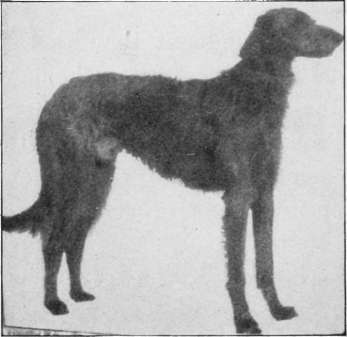
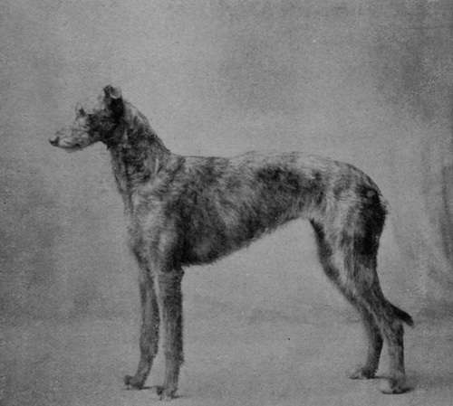
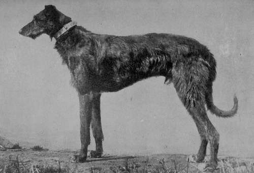

The Deerhound
Description
This section is from the book "Sporting Dogs. Their Points And Management In Health, And Disease", by Frank Townend Barton. Also available from Amazon: Sporting Dogs; Their Points and Management in Health and Disease.
The Deerhound
Regarding the origin of the Scottish Deerhound there is very little reliable information, though there can be no questioning the fact that it is a variety of dog indigenous to the Highlands, and bred specially for the purpose of hunting the deer. About forty-five years since there were not many of these Hounds in England, and even in their native land at, or about, this period, they were by no means common.
Although powerful and swift dogs, they are only used to a very limited extent, and breeders of these Hounds keep them more for companionship, and exhibition purposes.
They make excellent watch-dogs, and are exceedingly hardy.
The following description is that issued by the Deerhound Club:—
Head
The head should be broadest at the ears, tapering slightly to the eyes, with the muzzle tapering more decidedly to the nose.
The muzzle to be pointed, but the teeth and lips level.
The head ought to be long, the skull flat, rather than round, with a very slight rise over the eyes, but with nothing approaching a "stop".
The skull should be coated with moderately long hair, which is softer than the rest of the coat.
The nose to be black (although in some blue fawns the colour is blue) and slightly aquiline.
In the lighter coloured dogs a black muzzle is preferred. There should be a good moustache of rather silky hair and a fair beard.
Ears
These to be set on " high," and in repose folded back like those of the Greyhound, though raised above the head during excitement without losing the fold, and, in some cases, semi-erect.
A "prick" ear is bad.
A big, thick ear hanging flat to the head, or I heavily coated with long hair, is one of the worst faults. The ear should be soft, glossy and like a mouse's coat to the touch, and the smaller it is, the better. It should have no long coat or long fringe, but there is often a silky, silvery coat on the body of the ear and the tip.
Whatever the general colour, the ears ought to be black, or dark coloured.
Neck And Shoulders
The neck should be long —that is, of the length that befits the Greyhound character of the dog.
An overlong neck is neither necessary nor desirable, for the dog is not required to stoop to his work like a Greyhound, and it must be remembered that the mane, which every good specimen should have, detracts from the apparent length of the neck.
Moreover, a Deerhound requires a very strong neck to hold a stag.
The nape of the neck must be very prominent where the head is set on, and the throat clean cut at the angle, and prominent.
Shoulders to be of good slope and blades well back. Loaded and straight shoulders are faulty ones.
Stern
To be tolerably long, tapering and reaching to within l 1/2 inches of the ground, and about the same distance below hocks.
When the Hound is at rest, tail ought to be quite straight down, or curved.
Deerhound Champion St Ronan's Rhyme (Property of Mr Harry Rawson).
Deerhound Dog Champion Selwood Morven (Property of Mr Harry Rawson).
During excitement, curved, and in no case lifted out of the line of the back.
It should be well covered with hair on the inside, thick and woolly, underside longer, and a slight fringe near tip not objectionable. A curl or ring tail very faulty.
Eyes
These should be dark ; generally they are dark brown or hazel. A very light eye is not liked. The eye is moderately full, with a soft look during repose, but a keen, far-away expression when the Hound is roused. Rims of eyelids ought to be black.
Body
The body and general formation is that of a Greyhound, of larger size and bone.
Chest deep, rather than broad, but not too narrow, and flat-sided. The loin well arched, and drooping to the tail. A straight back is not desirable, this formation being unsuitable for uphill work, and very unsightly.
Legs And Feet
The legs to be broad and flat, with good broad forearms and elbows.
Straight fore-limbs, and close compact feet.
The hind-quarters to be drooping, and as broad and powerful as possible, the hips being set wide apart.
The hind-legs to be well bent at the stifle, with great length from hips to hocks, and the latter broad and flat.
Cow-hocks, weak pasterns, straight stifles, and splay feet are the worst of faults.
Coat
The hair on the body, neck, and quarters should be hard and wiry, and about 3 or 4 inches in length, and that on the head, breast, and belly much softer. There ought to be a slight hairy fringe on the inside of the fore and hind legs, but nothing approaching the feather of a Collie.
The Deerhound ought to be a shaggy dog, but not overcoated. A woolly coat is a bad one.
Some good strains have a mixture of silky coat with the hard, and this is preferable to a woolly coat. The proper Deerhound coat is thick, close-lying, ragged, and harsh or crisp to the feel.
Colour
More a matter for individual fancy.
A dark blue-grey most preferred, and after this, darker and lighter grey, or brindles, the darkest being preferred.
Yellow, sandy-red, or red-fawn, with black points (i.e., ears and muzzle), are equally esteemed, more so because two of the oldest strains—the M'Neil and Chesthill Menzies—are of these colours.
White is condemned by all the old authorities, but a white chest and white toes, occurring as they do in a great many of the darkest coloured dogs, are not so much objected to, though less the better, as the Deerhound is a self-coloured dog.
A white blaze on the head, or a white collar, should entirely disqualify.
A white tip on tail occurs in most strains.
Height Of Dogs
From 28 to 30 inches.
Height Of Bitches
From 26 inches upwards.
A big bitch is better for breeding and keeping up size. Ought not to exceed the height of the dog under any circumstances.
Weight
Dogs, 85 to 105 lbs. Bitches, 65 to 80
Mr Rawson, of Joppa, kindly supplied me with photographs.
The Total Points Required For A Deerhound
Character
Length and shape of head | . 10 |
Ears .... | . 6 |
Beard and eyebrows . | . 3 |
Eyes .... | . 5 |
Coat .... | . 7 |
Neck .... | . 5 |
Tail .... | . 4 |
Nails .... | . 2 |
Teeth .... | . 5 |
—47 |
Body
Height at shoulder | . 10 |
Substance and girth . | . 9 |
Length and symmetry of body | . 9 |
—28 |
lbs.
Limbs
Loins and hocks | . 10 |
Fore-limbs | . 8 |
Feet . | . 7 |
—25 | |
Total | 100 |
Continue to: